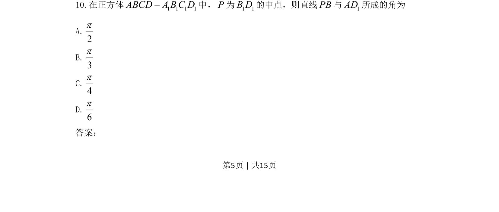
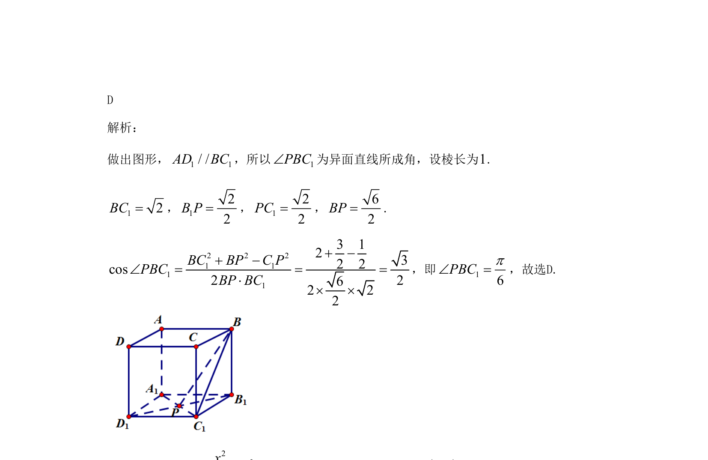

考点：异面直线所成角 正方体性质 向量法或平移法求角
异面直线所成角
正方体性质
向量法或平移法求角

在正方体中求解异面直线所成角的大小。

📄 原 PDF 第 5 页：素材/真题/吉林/2008-2024·（吉林）数学高考真题/2021年高考数学试卷（文）（全国乙卷）（新课标Ⅰ）（解析卷）.pdf
素材/真题/吉林/2008-2024·（吉林）数学高考真题/2021年高考数学试卷（文）（全国乙卷）（新课标Ⅰ）（解析卷）.pdf